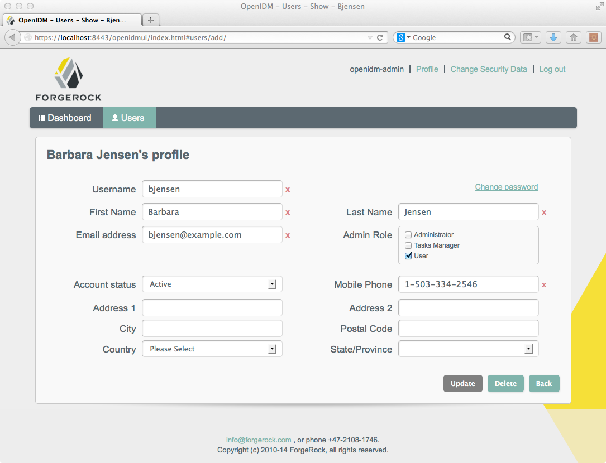

onSyncThe current distribution of OpenIDM comes with a variety of samples
in openidm/samples/. Sample 1 is described in
First OpenIDM
Sample. This chapter describes the remaining OpenIDM
samples.
Install OpenIDM, as described in Installing OpenIDM Services.
OpenIDM comes with an internal noSQL database, OrientDB, for use as the internal repository out of the box. This makes it easy to get started with OpenIDM. OrientDB is not yet supported for production use, however, so use a supported JDBC database when moving to production.
Each sample directory in openidm/samples/ contains a
number of subdirectories, such as conf/ and
script/. To start OpenIDM with a sample configuration,
navigate to the /path/to/openidm directory and use the
-p option of the startup command to
point to the sample whose configuration you want to use. Some, but not all
samples require additional software, such as an external LDAP server or
database.
When you move from one sample to the next, bear in mind that you are changing the OpenIDM configuration. For information on how configuration changes work, see Changing the Configuration in the Integrator's Guide.
Install an instance of OpenIDM specifically to try the samples. That way you can experiment as much as you like, and discard the result if you are not satisfied.
If you are using the same instance of OpenIDM for multiple samples, it is
helpful to clear out the repository created for an earlier sample. To do so,
shut down OpenIDM and delete the openidm/db/openidm
directory.
$ rm -rf /path/to/openidm/db/openidm
OpenIDM should now be ready to start with a new sample. For a number of the following samples, users are created either at the UI or with a commons REST call. Once added, and when reconciliation is complete, such users should be able to log into the UI.
Sample 1 is described in the chapter, First OpenIDM Sample.
Sample 2 resembles the first sample, but in sample 2 OpenIDM is connected to a local LDAP server. The sample has been tested with OpenDJ , but it should work with any LDAPv3 compliant server.
Sample 2 demonstrates how OpenIDM can pick up new or changed objects from an external resource. The sample contains only one mapping, from the external LDAP server resource to the OpenIDM repository. The sample therefore does not push any changes made to OpenIDM managed user objects out to the LDAP server.
Sample 2 expects the following configuration for the external LDAP server:
The LDAP server runs on the local host.
The LDAP server listens on port 1389.
A user with DN cn=Directory Manager
and password password has read access to the LDAP
server.
Directory data for that server is stored under base DN
dc=example,dc=com.
User objects for that server are stored under base DN
ou=People,dc=example,dc=com.
User objects have the object class
inetOrgPerson.
User objects have the following attributes:
cn
description
givenName
mail
sn
telephoneNumber
uid
userPassword
An example user object follows.
dn: uid=jdoe,ou=People,dc=example,dc=com objectClass: person objectClass: organizationalPerson objectClass: inetOrgPerson objectClass: top givenName: John uid: jdoe cn: John Doe telephoneNumber: 1-415-523-0772 sn: Doe mail: jdoe@example.com description: Created by OpenIDM userPassword: password
Prepare the LDAP server by creating a base suffix of
dc=example,dc=com, and importing these objects from
samples/sample2/data/Example.ldif.
dn: dc=com objectClass: domain objectClass: top dc: com dn: dc=example,dc=com objectClass: domain objectClass: top dc: example dn: ou=People,dc=example,dc=com ou: people description: people objectclass: organizationalunit dn: uid=jdoe,ou=People,dc=example,dc=com objectClass: person objectClass: organizationalPerson objectClass: inetOrgPerson objectClass: top givenName: John uid: jdoe cn: John Doe telephoneNumber: 1-415-523-0772 sn: Doe mail: jdoe@example.com description: Created for OpenIDM userPassword: password
There is an additional user, bjensen in the
sample LDIF file. This user is essentially a "dummy" user, provided for
compliance with RFC 4519, which stipulates that every
groupOfUniqueNames object must contain at least one
uniqueMember.
Prepare OpenIDM as described in Section 3.1.2, “Preparing OpenIDM”, then start OpenIDM with the configuration for sample 2.
$ cd /path/to/openidm $ ./startup.sh -p samples/sample2
Run reconciliation over the REST interface.
$ curl \ --cacert self-signed.crt \ --header "X-OpenIDM-Username: openidm-admin" \ --header "X-OpenIDM-Password: openidm-admin" \ --header "Content-Type: application/json" \ --request POST \ "https://localhost:8443/openidm/recon?_action=recon&mapping=systemLdapAccounts_managedUser"
Successful reconciliation returns a reconciliation run ID.
If you want to run a curl command over regular HTTP,
remove the --cacert self-signed.crt option and change
the URL to use protocol HTTP over port 8080. For instructions on how
to set up a self-signed.crt, see the Integrator's
Guide section entitled
Restrict REST Access to the HTTPS Port.
With the configuration of sample 2, OpenIDM creates user objects from LDAP in OpenIDM, assigning the new objects random unique IDs. To list user objects by ID, run a query over the REST interface.
$ curl \ --cacert self-signed.crt \ --header "X-OpenIDM-Username: openidm-admin" \ --header "X-OpenIDM-Password: openidm-admin" \ --request GET \ "https://localhost:8443/openidm/managed/user?_queryId=query-all-ids"
If you want the output to be formatted, include the
_prettyPrint=true request parameter or pipe the output to
a JSON parser such as jq, otherwise the resulting JSON
object appears all on one line.
{
"result": [
{
"_id": "53fbf0c5-aa37-4845-a4b3-92a21810a36d",
"_rev": "0"
},
{
"_id": "ae0aed26-2a9c-43e3-a6f0-ca707c9c6455",
"_rev": "0"
}
],
"resultCount": 2,
"pagedResultsCookie": null,
"remainingPagedResults": -1,
}
You should now be able to review reconciled users in the UI. Point your
browser to https://localhost:8443/openidmui, log in as
the openidm-admin user (with password
openidm-admin), and navigate to the Users tab. Select the
user whose profile information you want to see.
|  |
Alternatively, you can retrieve individual user objects by ID, as shown here.
$ curl \ --cacert self-signed.crt \ --header "X-OpenIDM-Username: openidm-admin" \ --header "X-OpenIDM-Password: openidm-admin" \ --request GET \ "https://localhost:8443/openidm/managed/user/53fbf0c5-aa37-4845-a4b3-92a21810a36d"
Like sample 2, sample 2b also connects to an external LDAP server.
Unlike sample 2, however, sample 2b has two mappings configured, one from the LDAP server to the OpenIDM repository, and the other from the OpenIDM repository to the LDAP server.
Configure the LDAP server as for sample 2, Section 3.3.1, “LDAP Server Configuration”. The LDAP user must have write access to create users from OpenIDM on the LDAP server.
When configuring the LDAP server, be sure to import the appropriate
LDIF file, in this case,
/path/to/openidm/samples/sample2b/data/Example.ldif
Prepare OpenIDM as described in Section 3.1.2, “Preparing OpenIDM”, then start OpenIDM with the configuration for sample 2b.
$ cd /path/to/openidm $ ./startup.sh -p samples/sample2b
Run reconciliation over the REST interface.
$ curl \ --cacert self-signed.crt \ --header "X-OpenIDM-Username: openidm-admin" \ --header "X-OpenIDM-Password: openidm-admin" \ --header "Content-Type: application/json" \ --request POST \ "https://localhost:8443/openidm/recon?_action=recon&mapping=systemLdapAccounts_managedUser"
Successful reconciliation returns a reconciliation run ID.
With the configuration of sample 2b, OpenIDM creates user objects from LDAP in OpenIDM, assigning the new objects random unique IDs. To list user objects by ID, run a query over the REST interface.
$ curl \ --cacert self-signed.crt \ --header "X-OpenIDM-Username: openidm-admin" \ --header "X-OpenIDM-Password: openidm-admin" \ --request GET \ "https://localhost:8443/openidm/managed/user?_queryId=query-all-ids"
The resulting JSON object should include content similar to the following.
{
"result": [
{
"_id": "53fbf0c5-aa37-4845-a4b3-92a21810a36d"
"_rev": "0",
},
{
"_id": "6490489f-bbff-4855-808a-5c1862b09339"
"_rev": "0",
}
"resultCount": 2,
"pagedResultsCookie": null,
"remainingPagedResults": -1,
],
}To retrieve the user, log into the UI, on an URI such as
https://localhost:8443/openidmui as the administrative
user
Alternatively, you can make a commons REST call to get a specific user object by ID.
$ curl \ --cacert self-signed.crt \ --header "X-OpenIDM-Username: openidm-admin" \ --header "X-OpenIDM-Password: openidm-admin" \ --request GET \ "https://localhost:8443/openidm/managed/user/53fbf0c5-aa37-4845-a4b3-92a21810a36d"
Test the second mapping by creating a user in the OpenIDM repository. On UNIX:
$ curl \
--cacert self-signed.crt \
--header "X-OpenIDM-Username: openidm-admin" \
--header "X-OpenIDM-Password: openidm-admin" \
--header "Content-Type: application/json" \
--request POST \
--data '{
"mail":"fdoe@example.com",
"sn":"Doe",
"telephoneNumber":"555-1234",
"userName":"fdoe",
"givenName":"Felicitas",
"description":"Felicitas Doe",
"displayName":"fdoe"}' \
"https://localhost:8443/openidm/managed/user?_action=create"On Windows:
$ curl ^
--cacert self-signed.crt ^
--header "X-OpenIDM-Username: openidm-admin" ^
--header "X-OpenIDM-Password: openidm-admin" ^
--header "Content-Type: application/json" ^
--request POST ^
--data "{
\"mail\":\"fdoe@example.com\",
\"sn\":\"Doe\",
\"telephoneNumber"\:\"555-1234\",
\"userName\":\"fdoe\",
\"givenName\":\"Felicitas\",
\"description\":\"Felicitas Doe\",
\"displayName\":\"fdoe\"}" ^
"https://localhost:8443/openidm/managed/user?_action=create"
By default, automatic synchronization is enabled. This means that when you
update a managed object, any mappings defined in the
sync.json file that have the managed object as the
source are automatically executed to update the target system. For more
information, see Synchronization
Mappings File in the Integrator's
Guide.
Test that the automatic reconciliation has been successful by locating the new user in the LDAP directory.
$ /path/to/OpenDJ/bin/ldapsearch \ -bindDN "cn=Directory Manager" \ -bindPassword password \ -hostname localhost \ -port 1389 \ -baseDN "dc=example,dc=com" \ "uid=fdoe" dn: uid=fdoe,ou=People,dc=example,dc=com mail: fdoe@example.com givenName: Felicitas objectClass: person objectClass: organizationalPerson objectClass: inetOrgPerson objectClass: top uid: fdoe cn: Felicitas Doe sn: Doe
Like sample 2b, sample 2c also connects to an external LDAP server. The only difference is that in sample 2c, LDAP Group Memberships are synchronized.
Configure the LDAP server as for sample 2, Section 3.3.1, “LDAP Server Configuration”. The LDAP user must have write access to create users from OpenIDM on the LDAP server.
In addition, two LDAP Groups should be created, which can be found in
the LDIF file: openidm/samples/sample2c/data/Example.ldif:
dn: ou=Groups,dc=example,dc=com ou: Groups objectClass: organizationalUnit objectClass: top dn: cn=openidm,ou=Groups,dc=example,dc=com uniqueMember: uid=jdoe,ou=People,dc=example,dc=com cn: openidm objectClass: groupOfUniqueNames objectClass: top dn: cn=openidm2,ou=Groups,dc=example,dc=com uniqueMember: uid=bjensen,ou=People,dc=example,dc=com cn: openidm2 objectClass: groupOfUniqueNames objectClass: top
The users with DNs uid=jdoe,ou=People,dc=example,dc=com
and uid=bjensen,ou=People,dc=example,dc=com are also
imported with the Example.ldif file. (The user
bjensen is essentially a "dummy" user, provided for
compliance with RFC 4519, which stipulates that every
groupOfUniqueNames object must contain at least one
uniqueMember. User bjensen is not
actually used in this sample.)
Prepare OpenIDM as described in Section 3.1.2, “Preparing OpenIDM”, then start OpenIDM with the configuration for sample 2c.
$ cd /path/to/openidm $ ./startup.sh -p samples/sample2c
Run reconciliation over the REST interface.
$ curl \ --cacert self-signed.crt \ --header "X-OpenIDM-Username: openidm-admin" \ --header "X-OpenIDM-Password: openidm-admin" \ --header "Content-Type: application/json" \ --request POST \ "https://localhost:8443/openidm/recon?_action=recon&mapping=systemLdapAccounts_managedUser"
Successful reconciliation returns a reconciliation run ID.
With the configuration of sample 2c, OpenIDM creates user objects from LDAP in OpenIDM, assigning the new objects random unique IDs. To list user objects by ID, run a query over the REST interface.
$ curl \ --cacert self-signed.crt \ --header "X-OpenIDM-Username: openidm-admin" \ --header "X-OpenIDM-Password: openidm-admin" \ --request GET \ "https://localhost:8443/openidm/managed/user?_queryId=query-all-ids"
The resulting JSON object should appear similar to the following:
{
"result": [
{
"_id": "53fbf0c5-aa37-4845-a4b3-92a21810a36d"
"_rev": "0",
}
{
"_id": "56f0fb7e-3837-464d-b9ec-9d3b6af665c3",
"_rev": "0"
}
]
"resultCount": 2,
"pagedResultsCookie": null,
"remainingPagedResults": -1,
}
You should now be able to retrieve John Doe's user object in the UI,
navigating to the domain for OpenIDM such as
https://localhost:8443/openidmui. Alternatively, you can
retrieve John Doe's user object at the command line by his ID.
$ curl \ --cacert self-signed.crt \ --header "X-OpenIDM-Username: openidm-admin" \ --header "X-OpenIDM-Password: openidm-admin" \ --request GET \ "https://localhost:8443/openidm/managed/user/53fbf0c5-aa37-4845-a4b3-92a21810a36d"
The user object should contain a property like:
"ldapGroups":["cn=openidm,ou=Groups,dc=example,dc=com"]
Now change the user on the OpenIDM side with the following REST call (on UNIX):
$ curl \
--cacert self-signed.crt \
--header "X-OpenIDM-Username: openidm-admin" \
--header "X-OpenIDM-Password: openidm-admin" \
--header "Content-Type: application/json" \
--request POST \
--data '[
{
"operation":"replace",
"field":"/ldapGroups",
"value": ["cn=openidm2,ou=Groups,dc=example,dc=com"]
}
]' \
"https://localhost:8443/openidm/managed/user?_action=patch&_queryId=for-userName&uid=jdoe"On Windows, you might need to escape certain characters, so your REST call would look like this:
$ curl ^
--cacert self-signed.crt ^
--header "X-OpenIDM-Username: openidm-admin" ^
--header "X-OpenIDM-Password: openidm-admin" ^
--header "Content-Type: application/json" ^
--request POST ^
--data "[
{
\"operation\":\"replace\",
\"field\":\"\/ldapGroups\",
\"value\": [\"cn=openidm2,ou=Groups,dc=example,dc=com\"]
}
]" ^
"https://localhost:8443/openidm/managed/user?_action=patch&_queryId=for-userName&uid=jdoe"This will change the user's ldapGroups property
in OpenIDM from "cn=openidm,ou=Groups,dc=example,dc=com"
to "cn=openidm2,ou=Groups,dc=example,dc=com" and, as a
result, the user will be removed from the one LDAP group and added to
the other LDAP group on OpenDJ.
Retrieve John Doe's user object again and notice the changed
"ldapGroups" property.
$ curl \ --cacert self-signed.crt \ --header "X-OpenIDM-Username: openidm-admin" \ --header "X-OpenIDM-Password: openidm-admin" \ --request GET \ "https://localhost:8443/openidm/managed/user/56f0fb7e-3837-464d-b9ec-9d3b6af665c3"
By default, automatic synchronization is enabled. This means that when you
update a managed object, any mappings defined in the
sync.json file that have the managed object as the
source are automatically executed to update the target system. For more
information, see Synchronization
Mappings File in the Integrator's
Guide.
Sample 2d also connects to an external LDAP server. This sample focuses on LDAP Group synchronization.
Configure the LDAP server as for sample 2, Section 3.3.1, “LDAP Server Configuration”. The LDAP user must have write access to create users from OpenIDM on the LDAP server.
In addition, two LDAP Groups should be created, which can be found in
the LDIF file: openidm/samples/sample2d/data/Example.ldif
(if they have not already been added through sample 2c):
dn: ou=Groups,dc=example,dc=com ou: Groups objectClass: organizationalUnit objectClass: top dn: cn=openidm,ou=Groups,dc=example,dc=com uniqueMember: uid=jdoe,ou=People,dc=example,dc=com cn: openidm objectClass: groupOfUniqueNames objectClass: top dn: cn=openidm2,ou=Groups,dc=example,dc=com uniqueMember: uid=bjensen,ou=People,dc=example,dc=com uniqueMember: uid=jdoe,ou=People,dc=example,dc=com cn: openidm2 objectClass: groupOfUniqueNames objectClass: top
The user with dn uid=jdoe,ou=People,dc=example,dc=com
is also imported with the Example.ldif file.
There is an additional user, bjensen in the
sample LDIF file. This user is essentially a "dummy" user, provided for
compliance with RFC 4519, which stipulates that every
groupOfUniqueNames object must contain at least one
uniqueMember. bjensen is not actually
used in this sample.
Prepare OpenIDM as described in Section 3.1.2, “Preparing OpenIDM”, then start OpenIDM with the configuration for sample 2d.
$ cd /path/to/openidm $ ./startup.sh -p samples/sample2d
Run reconciliation for the groups mapping over the REST interface.
$ curl \ --cacert self-signed.crt \ --header "X-OpenIDM-Username: openidm-admin" \ --header "X-OpenIDM-Password: openidm-admin" \ --header "Content-Type: application/json" \ --request POST \ "https://localhost:8443/openidm/recon?_action=recon&mapping=systemLdapGroups_managedGroup"
Successful reconciliation returns a reconciliation run ID.
With the configuration of sample 2d, OpenIDM creates group objects from LDAP in OpenIDM. To list group objects by ID, run a query over the REST interface.
$ curl \ --cacert self-signed.crt \ --header "X-OpenIDM-Username: openidm-admin" \ --header "X-OpenIDM-Password: openidm-admin" \ --request GET "https://localhost:8443/openidm/managed/group?_queryId=query-all-ids"
The resulting JSON object should include content similar to the following.
{
"result":[
{
"_id":"3c704429-aacd-4995-816a-fac33451c642"
"_rev": "0",
},
{
"_id":"b0982152-5099-4358-bdd1-45a39ebe0d77"
"_rev": "0",
}
]
"resultCount": 2,
"pagedResultsCookie": null,
"remainingPagedResults": -1,
}To retrieve a group, get the object by ID.
$ curl \ --cacert self-signed.crt \ --header "X-OpenIDM-Username: openidm-admin" \ --header "X-OpenIDM-Password: openidm-admin" \ --request GET \ "https://localhost:8443/openidm/managed/group/b0982152-5099-4358-bdd1-45a39ebe0d77"
Your group's object should be similar to the following:
{
"name": [
"openidm"
],
"uniqueMember": [
"uid=jdoe,ou=People,dc=example,dc=com"
],
"description": [],
"dn": "cn=openidm,ou=Groups,dc=example,dc=com",
"_rev": "0",
"_id": "b0982152-5099-4358-bdd1-45a39ebe0d77"
}
Sample 3 shows an example configuration for the Scripted SQL connector. The Scripted SQL connector allows OpenIDM to communicate with the database through configurable SQL scripts. Each operation, like create or delete, is represented by its own script.
In this sample, you will see how OpenIDM uses a scripted connection to a MySQL server. Do configure MySQL first, before starting OpenIDM.
After reconciliation with the existing MySQL database, you will be able to review users in the internal repository of OpenIDM.
Sample 3 uses the following file in the conf/ directory
for the Scripted SQL connector:
conf/provisioner.openicf-scriptedsql.json. It cites
customizable Groovy scripts in the
/path/to/openidm/samples/sample3/tools directory.
Prepare a fresh installation of OpenIDM before trying this sample.
In this example OpenIDM communicates with an external MySQL database server.
Make sure MySQL is running.
If you want to test this sample on an existing MySQL database, examine the
configurationProperties section of the
provisioner.openicf-scriptedsql.json file. Change
parameters such as host, database,
password, and jdbcConnectionUrl to
match your configuration.
The remainder of the Sample 3 documentation is based on the database
schema that exists in the openidm/samples/sample3/data
directory.
The sample expects the following configuration for MySQL:
The database is available on the local host.
The database listens on port 3306.
You can connect over the network to the database with user
root and password password.
MySQL serves a database called HRDB with a table
called Users.
The database schema is as described in the data definition language file,
openidm/samples/sample3/data/sample_HR_DB.mysql.
Import the file into MySQL before running the sample.
$ mysql -u root -p < /path/to/openidm/samples/sample3/data/sample_HR_DB.mysql Enter password: $
Once imported, you can review the contents of the sample in MySQL. The following command accesses the MySQL prompt:
$ mysql -u root -p
From the mysql > prompt, use the following commands
to review the users configured in the sample_HR_DB.mysql
file:
mysql > use HRDB;
Reading table information for completion of table and column names
You can turn off this feature to get a quicker startup with -A
Database changed
mysql > select * from Users;
+----+--------+--------------+-----------+----------+---------------+------...
| id | uid | password | firstname | lastname | fullname | email...
+----+--------+------------------------------------------+-----------+-----...
| 1 | bob | e38ad2149... | Bob | Fleming | Bob Fleming | Bob. ...
| 2 | rowley | 2aa60a8ff... | Rowley | Birkin | Rowley Birkin | Rowl ...
| 3 | louis | 1119cfd37... | Louis | Balfour | Louis Balfour | Loui ...
| 4 | john | a1d7584da... | John | Smith | John Smith | John ...
| 5 | jdoe | edba955d0... | John | Doe | John Doe | John ...
+----+--------+------------------------------------------+-----------+---- ...
5 rows in set (0.01 sec)
You can exit from the MySQL prompt with the quit command.
The passwords in the output shown above are hashed to the SHA-1 standard, as they cannot be read into OpenIDM as cleartext.
The SHA-1 Hash function is used for compatibility reasons. When configuring a database for production, more secure algorithms should be used.
Prepare OpenIDM as described in Section 3.1.2, “Preparing OpenIDM”.
Set up the MySQL driver for OpenIDM. Download MySQL Connector/J,
version 5.1 or later. Unpack the download and copy the .jar into the
openidm/bundle directory.
$ cp mysql-connector-java-version-bin.jar /path/to/openidm/bundle/
Once the MySQL driver is in place, start OpenIDM with the configuration for sample 3.
$ cd /path/to/openidm $ ./startup.sh -p samples/sample3
The sample 3 sync.json configuration file contains a
mapping to reconcile OpenIDM and the external database. Run the
reconciliation with the following command.
$ curl \ --cacert self-signed.crt \ --header "X-OpenIDM-Username: openidm-admin" \ --header "X-OpenIDM-Password: openidm-admin" \ --header "Content-Type: application/json" \ --request POST \ "https://localhost:8443/openidm/recon?_action=recon&mapping=systemHrdb_managedUser"
Reconciliation creates the five users from the database in the OpenIDM repository. Check the result with the following command.
$ curl \ --cacert self-signed.crt \ --header "X-OpenIDM-Username: openidm-admin" \ --header "X-OpenIDM-Password: openidm-admin" \ --request GET \ "https://localhost:8443/openidm/managed/user?_queryId=query-all-ids"
The output includes the identifier _id for each user.
{
"result": [ {
"_id": "8366a23d-f6cf-46df-9746-469bf45aafcd",
"_rev": "0"
},
{
"_id": "3f90933b-9397-4897-84d0-03ed8d99f61e",
"_rev": "0"
},
{
"_id": "8fbf759d-bebc-42ed-b321-b69487b4470f",
"_rev": "0"
},
{
"_id": "9592de42-a8ef-4db3-9c6c-7d191e39b084",
"_rev": "0"
},
{
"_id": "d933441b-684b-446c-a89e-01eca6d21ef3",
"_rev": "0"
},
{
"_id": "fd962b71-752a-444b-8492-35bff57bec69",
"_rev": "0"
} ],
"resultCount": 6,
"pagedResultsCookie": null,
"remainingPagedResults": -1
}You can get more information about users with any of the following three methods:
You can review the users from the UI, navigating to the domain where OpenIDM
is installed, with a URL similar to
https://localhost:8443/openidmui
Alternatively, to view all fields for a single user, based on its
_id, run the following command:
$ curl \ --cacert self-signed.crt \ --header "X-OpenIDM-Username: openidm-admin" \ --header "X-OpenIDM-Password: openidm-admin" \ --request GET \ "https://localhost:8443/openidm/managed/user/8366a23d-f6cf-46df-9746-469bf45aafcd"
You can query specific fields with a REST call. For example, the following
command displays the unique ID and the givenName of all
managed users:
$ curl \ --cacert self-signed.crt \ --header "X-OpenIDM-Username: openidm-admin" \ --header "X-OpenIDM-Password: openidm-admin" \ --request GET \ "https://localhost:8443/openidm/managed/user?_queryId=query-all&fields=_openidm_id,givenName"
Sample 4 works with two databases, a comma-separated value file and an XML file. There is no need to include any external resources.
A correlation query is used to relate the records in these two files.
No external configuration is required for this sample. Prepare OpenIDM as described in Section 3.1.2, “Preparing OpenIDM”, then start up OpenIDM with the configuration of sample 4.
$ cd /path/to/openidm $ ./startup.sh -p samples/sample4
The sample4/data/hr.csv file contains two example
users. The first line of the file sets the attribute names.
Review the current contents of the database in the
sample4/data/xmlConnectorData.xml file. For comparison
purposes, make a copy of the file in a temporary directory with a command
like:
$ cp /path/to/openidm/samples/sample4/data/xmlConnectorData.xml /tmp/
The reconciliation command run here uses the information
from the hr.csv file to update the database in the
sample4/data/xmlConnectorData.xml file.
$ curl \ --cacert self-signed.crt \ --header "X-OpenIDM-Username: openidm-admin" \ --header "X-OpenIDM-Password: openidm-admin" \ --header "Content-Type: application/json" \ --request POST \ "https://localhost:8443/openidm/recon?_action=recon&mapping=csv_xmlfile"
Check the results of reconciliation. Review the updated contents
of the sample4/data/xmlConnectorData.xml file.
If you want to experiment further, try changing the data in the
hr.csv file. Run the noted reconciliation command
again.
These users will not be visible from the OpenIDM UI, since they are mapped directly between the XML and CSV files. The internal OpenIDM repository is not updated in this sample.
Sample 5 demonstrates the flow of data from one external resource to
another. The resources are named LDAP and
AD but in the sample, both directory-like resources are
simulated with XML files.
You can optionally configure an outbound email service, if you want to receive emailed reconciliation summaries, as described in the following section.
If you do not configure the email service, the functionality of the sample does not change. However, you might see the following message at the OpenIDM console when you run a reconciliation operation:
Email service not configured; report not generated.
To configure an email summary, follow these steps:
Copy the template external.email.json file from
the /path/to/openidm/samples/misc directory:
$ cd /path/to/openidm
$ cp samples/misc/external.email.json samples/sample5/conf
Edit the external.email.json file for outbound email,
as described in the chapter on
Sending
Email.
Edit the reconStats.js file from the
/path/to/openidm/samples/sample5/script directory.
Near the start of the file, configure the OpenIDM email service to send
statistics to the email addresses of your choice:
var params = {
//UPDATE THESE VALUES
from : "openidm@example.com",
to : "youremail@example.com",
cc : "idmadmin2@example.com,idmadmin3@example.com",
subject : "Recon stats for " + global.reconName,
type : "text/html"
},
template,
No external configuration is required for this sample. Prepare OpenIDM as described in Section 3.1.2, “Preparing OpenIDM”, then start OpenIDM with the configuration of sample 5.
$ cd /path/to/openidm $ ./startup.sh -p samples/sample5
The XML files that simulate the resources are located in the
openidm/samples/sample5/data/ folder. When you start
OpenIDM with the sample 5 configuration, OpenIDM creates the
xml_AD_Data.xml file, which does not contain users
until you run reconciliation.
Run a reconciliation operation, to synchronize the contents of the simulated LDAP resource to the OpenIDM repository.
$ curl \ --cacert self-signed.crt \ --header "X-OpenIDM-Username: openidm-admin" \ --header "X-OpenIDM-Password: openidm-admin" \ --header "Content-Type: application/json" \ --request POST \ "https://localhost:8443/openidm/recon?_action=recon&mapping=systemLdapAccounts_managedUser"
This command creates a user in the repository. It is not necessary to run a second reconciliation operation to synchronize the AD resource. Automatic synchronization propagates any change made to managed users in the OpenIDM repository to the simulated AD resource.
Review the contents of xml_AD_Data.xml. It should now
contain information for the same user that was present in the startup
version of the xml_LDAP_Data.xml file.
Alternatively, you can list users in the AD resource with the following command:
$ curl \
--cacert self-signed.crt \
--header "X-OpenIDM-Username: openidm-admin" \
--header "X-OpenIDM-Password: openidm-admin" \
--request GET \
"https://localhost:8443/openidm/system/ad/account?_queryId=query-all-ids"
{
"result" : [ {
"name" : "DDOE1",
"__UID__" : "8dad9df3-820d-41ea-a3ab-a80c241bbc98",
"_id" : "8dad9df3-820d-41ea-a3ab-a80c241bbc98"
} ],
"resultCount" : 1,
"pagedResultsCookie" : null,
"remainingPagedResults" : -1
}
You can use the _id of the user to read the user
information from the AD resource, for example:
$ curl \
--cacert self-signed.crt \
--header "X-OpenIDM-Username: openidm-admin" \
--header "X-OpenIDM-Password: openidm-admin" \
--request GET \
"https://localhost:8443/openidm/system/ad/account/8dad9df3-820d-41ea-a3ab-a80c241bbc98"
{
"email" : [ "mail1@example.com" ],
"name" : "DDOE1",
"__UID__" : "8dad9df3-820d-41ea-a3ab-a80c241bbc98",
"firstname" : "Darth",
"lastname" : "Doe",
"_id" : "8dad9df3-820d-41ea-a3ab-a80c241bbc98"
}[
To verify that the sample is working, repeat the process. Set up a second
user in the xml_LDAP_Data.xml file. An example of how
that file might appear with a second user (GDOE1) is
shown here:
<?xml version="1.0" encoding="UTF-8"?>
<icf:OpenICFContainer
xmlns:icf="http://openidm.forgerock.com/xml/ns/public/resource/openicf/resource-schema-1.xsd"
xmlns:ri="http://openidm.forgerock.com/xml/ns/public/resource/instances/resource-schema-extension"
xmlns:xsi="http://www.w3.org/2001/XMLSchema-instance"
xsi:schemaLocation="http://openidm.forgerock.com/xml/ns/public/resource/instances/resource-schema-extension
samples/sample5/data/resource-schema-extension.xsd
http://openidm.forgerock.com/xml/ns/public/resource/openicf/resource-schema-1.xsd
data/resource-schema-1.xsd">
<ri:__ACCOUNT__>
<icf:__UID__>1</icf:__UID__>
<icf:__PASSWORD__>TestPassw0rd2</icf:__PASSWORD__>
<ri:firstname>Darth</ri:firstname>
<icf:__DESCRIPTION__>Created By XML1</icf:__DESCRIPTION__>
<icf:__NAME__>DDOE1</icf:__NAME__>
<ri:email>mail1@example.com</ri:email>
<ri:lastname>Doe</ri:lastname>
</ri:__ACCOUNT__>
<ri:__ACCOUNT__>
<icf:__UID__>2</icf:__UID__>
<icf:__PASSWORD__>TestPassw0rd2</icf:__PASSWORD__>
<ri:firstname>Garth</ri:firstname>
<icf:__DESCRIPTION__>Created By XML1</icf:__DESCRIPTION__>
<icf:__NAME__>GDOE1</icf:__NAME__>
<ri:email>mail2@example.com</ri:email>
<ri:lastname>Doe</ri:lastname>
</ri:__ACCOUNT__>
</icf:OpenICFContainer>Rerun the reconciliation and query REST commands shown previously. The reconciliation operation creates the new user from the simulated LDAP resource in the OpenIDM repository. Automatic synchronization then creates that user in the AD resource.
The compensated synchronization mechanism depicted in this sample can help manage the risks associated with synchronizing data across multiple resources.
Typically, when a managed/user object is changed, automatic synchronization replays that change to all configured external resources. If synchronization fails for one target resource (for example, due to a policy validation failure on the target, or the target being unavailable), the synchronization operation stops at that point. The effect is that a record might be changed in the repository, and in the targets on which synchronization was successful, but not on the failed target, or any targets that would have been synchronized after the failure. This situation can result in disparate data sets across resources. While a reconciliation operation would eventually bring all targets back in sync, reconciliation can be an expensive operation with large data sets.
The compensated synchronization mechanism ensures that either all resources
are synchronized successfully, or that the original change is rolled back.
This mechanism uses an onSync script hook configured with
a compensate.js script that can be used to "revert" the
partial change to managed/user and to the corresponding external resources.
Sample 5b is similar to sample 5 in that it simulates two external resources
with XML files (located in the
/path/to/samples/sample5b/data directory). The
xml_LDAP_Data.xml file simulates an LDAP data source.
OpenIDM creates the xml_AD_Data.xml file when you start
OpenIDM with the sample. Sample 5b adds the onSync script
hook to the process, configured in the
sample5b/conf/managed.json file.
The following excerpt of the managed.json file shows
the onSync hook, which calls the
compensate.js script, provided in the
/path/to/openidm/bin/defaults/script directory.
...
},
"onSync" : {
"type" : "text/javascript",
"file" : "compensate.js"
},
You can use the onSync script hook to ensure that changes
made in the repository are synchronized to all external resources, or that
no changes are made. For more information about how automatic synchronization
uses the onSync script hook, see How Automatic
Sync works with onSync in the Integrator's
Guide.
You can optionally configure an outbound email service for this sample, if you want to receive emailed reconciliation summaries. The email service configuration is identical to that of sample 5 (Section 3.9.1, “Configure Email for the Sample”).
No external configuration is required for this sample. Prepare OpenIDM as described in Section 3.1.2, “Preparing OpenIDM”, then start OpenIDM with the configuration of sample 5b.
$ cd /path/to/openidm $ ./startup.sh -p samples/sample5b
The XML files that simulate an external LDAP and AD resource are now located
in the openidm/samples/sample5b/data/ directory. The
simulated AD data store file, xml_AD_Data.xml, does not
contain users until you run reconciliation.
Run the sample in exactly the same way that you did for Sample 5, following the steps in Section 3.9.3, “Run the Sample”.
To demonstrate integration of the samples with the OpenIDM UI, this sample uses the UI to view and make changes to user objects in the repository. However, you can also use the REST interface to make these changes, as shown in the previous section.
Log into the OpenIDM UI as the administrative user. On a local system,
navigate to https://localhost:8443/openidmui. The default
administrative account and password are both openidm-admin.
Make a change to the data of an existing user (DDOE1).
With automatic synchronization, that change is reflected almost immediately
on the external resources. For sample 5b, you should see the changes in both
XML files in the /path/to/openidm/sample5b/data
directory. Alternatively, you can query the external resources over REST, as
described previously.
The synchronization is successful, across all configured external resources,
so the updated user record can be seen in both the
xml_LDAP_Data.xml and
xml_AD_Data.xml files.
The next step is to simulate a problem connecting to the LDAP resource. One way to do so on the local system is to rename the LDAP data file so that it is unreadable. On a Linux system, the following command, as an administrative user, would serve that purpose:
$ cd /path/to/openidm/samples/sample5b/data $ sudo mv xml_LDAP_Data.xml xml_LDAP_Data.xml.bak
In the UI, now try another update to user DDOE1. With the
modified filename of the simulated LDAP resource, automatic synchronization
cannot write to this resource. An error similar to the following is
displayed in the log file, openidm0.log.0:
Data file does not exist: /path/to/openidm/samples/sample5b/data/xml_LDAP_Data.xml
Although the AD resource is available, automatic synchronization will not
reach this resource, because the mapping is specified
after the managed/user to LDAP mapping in the
sync.json file.
When the automatic synchronization fails for the LDAP resource, the
onSync hook invokes the
compensate.js script. This script attempts to revert
the original change by performing another update to DDOE1 in the repository
(managed/user). This change, in turn, triggers another automatic
synchronization to the AD and LDAP resources.
Because the LDAP resource is still unreadable, the synchronization to LDAP
fails again, which triggers the compensate.js script
again. This time, however, the script recognizes that the change was
originally called as a result of a compensation and aborts.
The original synchronization error from the first update is thrown from the script and the UI should display that error. If you refresh the UI, and view that user entry again, you will notice that the change to the entry has been reverted.
Note that if you change the name of the AD resource file (to make it
unavailable), a change to a managed/user entry will be synchronized
successfully with the LDAP resource (because that mapping appears first in
sync.json). The synchronization will fail for the AD
resource. In this case, the change will be reverted on both the managed/user
entry, and the LDAP resource.
Sample 6 resembles sample 5, but demonstrates LiveSync from an external
resource. Sample 6 includes configuration files for two scenarios, depending
on whether you have a live Active Directory (AD) service, or whether you
need to simulate an AD service with an OpenDJ server. Each scenario is
associated with a file in the
/path/to/sample6/alternatives directory. The file you
select should be copied to the /path/to/sample6/conf
directory.
If you have an actual AD deployment available, copy the
provisioner.openicf-realad.json file to the
conf/ subdirectory. You can then configure
synchronization between an OpenDJ Directory Server and an active AD
deployment.
As this sample demonstrates synchronization from the AD server to OpenDJ, data on the AD server is not changed.
If you need to simulate an AD deployment, copy the
provisioner.openicf-fakead.json file to the
conf/ subdirectory. You can then configure
synchronization between an OpenDJ Directory server and a simulated
AD server.
This sample simulates an AD server on the same instance of OpenDJ, using a different base DN.
The options shown in the associated configuration files can be easily modified to work with any standard LDAP server.
If you have an existing, active instance of AD, set up OpenDJ, as described in the OpenDJ Installation Guide.
During installation, populate OpenDJ with the data in the
Example.ldif file, available in the
/path/to/sample6/data directory.
The actions run in this sample should not change any data on the AD server.
In this sample, an AD deployment is simulated with a different baseDN
(dc=fakead,dc=com) on the same OpenDJ server instance.
You can also simulate the AD server with a separate OpenDJ instance, running
on the same host, as long as the two instances communicate on different
ports. The data for the simulated AD instance is contained in the file
AD.ldif. The data for the OpenDJ instance is contained
in the file Example.ldif.
This sample assumes a replicated OpenDJ server. When configured, OpenDJ replication includes an External Change Log (ECL), required to support LiveSync. LiveSync detects changes in OpenDJ by reading the ECL.
To activate the OpenDJ ECL, enable replication as described in the OpenDJ Administration Guide chapter on Managing Data Replication
Once configured, you can proceed with either an active or simulated AD deployment.
To configure an active AD deployment for sample 6, open the
provisioner.openicf-realad.json file in
a text editor. Update it as needed. At minimum, you should check and
if needed update the following parameters in that file, as shown in the
following table:
| Option | Description |
|---|---|
| host | The hostname/IP address of the AD server |
| port | The LDAP port; the default is 389. |
| ssl | By default, SSL is not used. |
| principal | The full DN of the account to bind with, such as "CN=Administrator,CN=Users,DC=example,DC=com" |
| credentials | If a password is used, replace null with that password.
When OpenIDM starts, it encrypts that password in the
provisioner.openicf-realad.conf file. |
| baseContexts | The DNs for account containers, such as ["CN=Users,DC=Example,DC=com"] |
| baseContextsToSynchronize | Set to the same value as baseContexts |
| accountSearchFilter | Default searches for active user (not computer) accounts |
| accountSynchronizationFilter | Default synchronizes with active user (not computer) accounts |
If you do not want to filter out computer and disabled user accounts,
set the accountSearchFilter and
accountSynchronizationFilter to null.
Not everyone has a testable instance of AD readily available. For such
administrators, you can use the AD.ldif file from
the data/ subdirectory to simulate an AD deployment.
If you have not already done so, copy the
provisioner.openicf-fakead.json file to the
conf subdirectory.
As previously mentioned, you can use a separate OpenDJ instance to simulate the AD server. However, the following instructions assume that the simulated AD server runs on the same OpenDJ instance.
Open the provisioner.openicf-fakead.json file and
note the following:
OpenDJ directory server uses port 1389 by default for users who cannot use privileged ports, so this is the port that is specified in the provisioner file. Adjust the port if your OpenDJ server is listening on a different port.
The simulated AD server uses the base DN
dc=fakead,dc=com.
To load the data for the simulated AD instance, launch the OpenDJ control
panel, add the simulated AD baseDN (dc=fakead,dc=com),
and then import the /path/to/sample6/data/AD.ldif
file. When you import the AD.ldif file, select
"Append to Existing Data", not "Overwrite Existing Data". Otherwise, the
data in the dc=example,dc=com baseDN will be
overwritten.
Now that OpenDJ and a real or simulated AD database is configured, prepare OpenIDM as described in Section 3.1.2, “Preparing OpenIDM”. You can then start OpenIDM with the configuration for sample 6.
$ cd /path/to/openidm $ ./startup.sh -p samples/sample6
The following sections show how to run the sample with command-based reconciliation with a REST call, and to configure scheduled reconciliation with LiveSync.
Now that OpenIDM is in operation, review the entries in the OpenDJ
data store. When you run reconciliation, any entries that share the same
uid with the AD data store will be updated with the
contents from AD.
If you have set up the simulated AD data store as described in
Section 3.11.3.3, “External Configuration for a Simulated AD Deployment”, compare the
entries for uid=jdoe as shown in the
AD.ldif and Example.ldif files.
Note the different values of givenName for
uid=jdoe.
Run reconciliation over the REST interface. If you have followed the
instructions for the simulated AD data store, the following command
takes the information for user jdoe imported from the
AD.ldif file, with a givenName of
Johnny, and synchronizes that information to the LDAP database, overwriting
the givenName of John for that same user
jdoe.
$ curl \ --cacert self-signed.crt \ --header "X-OpenIDM-Username: openidm-admin" \ --header "X-OpenIDM-Password: openidm-admin" \ --header "Content-Type: application/json" \ --request POST \ "https://localhost:8443/openidm/recon?_action=recon&mapping=systemAdAccounts_managedUser"
Successful reconciliation returns a reconciliation run ID.
{"_id":"9ece3807-08c3-4ec6-87fb-a6a2d0c71cee"}The reconciliation operation synchronizes the data in the AD deployment with OpenIDM repository (managed/user). That information is then automatically synchronized to the OpenDJ server, as described in Synchronization Situations and Actions.
After reconciliation, list all users in the OpenDJ server data store.
$ curl \ --cacert self-signed.crt \ --header "X-OpenIDM-Username: openidm-admin" \ --header "X-OpenIDM-Password: openidm-admin" \ --request GET \ "https://localhost:8443/openidm/system/ldap/account?_queryId=query-all-ids"
The result should resemble the following JSON object.
{
"result": [ {
"dn" : "uid=jdoe,ou=People,dc=example,dc=com",
"_id" : "uid=jdoe,ou=People,dc=example,dc=com"
}, {
"dn" : "uid=bjensen,ou=People,dc=example,dc=com",
"_id" : "uid=bjensen,ou=People,dc=example,dc=com"
} ],
"resultCount": 2,
"pagedResultsCookie": null,
"remainingPagedResults": -1,
}
You see only two entries, as the uid=jdoe entry from
dc=fakead,dc=com overwrites the original LDAP entry for
uid=jdoe in the reconciled LDAP data store.
To read the user object in the OpenDJ server, run the
ldapsearch command. The following example returns the
entry for user uid=jdoe:
$ ./ldapsearch \ --port 1389 \ --baseDN dc=example,dc=com \ "(uid=jdoe)"
You can start reconciliation by using a scheduled configuration or
by using the REST interface directly. However, to use LiveSync, you must
configure a schedule. When LiveSync is active, the default schedule in the
schedule-activeSynchroniser_systemAdAccount.json
configuration file runs LiveSync every 15 seconds.
LiveSync pushes changes made in the AD data store to the OpenIDM repository, automatically.
LiveSync is disabled by default. To activate LiveSync, change the
value of the "enabled" property
from false to true.
{
"enabled" : false,
"type" : "cron",
"schedule" : "0/15 * * * * ?",
"invokeService" : "provisioner",
"invokeContext" : {
"action" : "liveSync",
"source" : "system/ad/account"
},
"invokeLogLevel" : "debug"
}Now you can test LiveSync. This procedure assumes that you have configured OpenDJ using the parameters and commands described in this section.
Create an LDIF file with a new user entry (uid=bsmith)
that will be added to the simulated AD data store.
The following is the contents of a sample
bsmith.ldif file for demonstration purposes:
dn: uid=bsmith,ou=People,dc=fakead,dc=com objectClass: person objectClass: inetOrgPerson objectClass: organizationalPerson objectClass: top givenName: Barry description: Created to see LiveSync work uid: bsmith cn: Barry sn: Smith mail: bsmith@example.com telephoneNumber: 1-415-523-0772 userPassword: passw0rd
Navigate to the /path/to/opendj/bin directory.
Use the ldapmodify command to add the
bsmith.ldif file to the directory.
$ ./ldapmodify --port 1389 --defaultAdd --bindDN "cn=Directory Manager" --bindPassword password --filename /path/to/bsmith.ldif
Now you can test synchronization by viewing the new user in the OpenIDM
repository. The easiest way to do this, is through OpenIDM UI. You should
be able to log into the UI with any of the accounts in the AD data store.
For this example, log into the UI as user bsmith, with
password passw0rd. The fact that you can log into the
UI as this new user indicates that LiveSync has synchronized the user
from the AD data store to the managed/user repository.
Automatic synchronization pushes this change out to the OpenDJ data store. To test this synchronization operation, search the OpenDJ baseDN for the new user entry.
$ ./ldapsearch \ --port 1389 \ --baseDN ou=people,dc=example,dc=com \ "(uid=bsmith)"
Sample 7 demonstrates how you can use OpenIDM to expose user data with a SCIM-like schema. The sample uses the XML file connector to read in attributes from external accounts and construct a JSON object for users stored in the OpenIDM repository. For more information about SCIM schema, see System for Cross-Domain Identity Management: Core Schema 1.1.
Prepare OpenIDM as described in Section 3.1.2, “Preparing OpenIDM”, then start OpenIDM with the configuration for sample 7.
$ cd /path/to/openidm $ ./startup.sh -p samples/sample7
Run a reconciliation to pull the user from
samples/sample7/data/xmlConnectorData.xml into the
OpenIDM internal repository.
$ curl \ --cacert self-signed.crt \ --header "X-OpenIDM-Username: openidm-admin" \ --header "X-OpenIDM-Password: openidm-admin" \ --header "Content-Type: application/json" \ --request POST \ "https://localhost:8443/openidm/recon?_action=recon&mapping=systemXmlfileAccounts_managedUser"
Reconciliation creates a user object in the repository. Retrieve the user from the repository.
$ curl \ --cacert self-signed.crt \ --header "X-OpenIDM-Username: openidm-admin" \ --header "X-OpenIDM-Password: openidm-admin" \ --request GET \ "https://localhost:8443/openidm/managed/user/DDOE1"
The user object has the following JSON representation.
{
"_id" : "DDOE1",
"_rev" : "2",
"schemas" : "['urn:scim:schemas:core:1.0']",
"ims" : [ {
"type" : "aim",
"value" : "jonyOnAim"
}, {
"type" : "skype",
"value" : "skyperHiasl"
} ],
"locale" : null,
"phoneNumbers" : [ {
"type" : "work",
"value" : "1234567"
}, {
"type" : "home",
"value" : "1234568"
} ],
"emails" : [ {
"type" : "work",
"value" : "hallo@example.com",
"primary" : true
}, {
"type" : "home",
"value" : "jdoe@forgerock.com"
} ],
"externalId" : "DDOE1",
"preferredLanguage" : "en_US",
"meta" : {
"lastModified" : "Thu May 01 2014 12:57:10 GMT-0800 (GMT-08:00)",
"created" : "Thu May 01 2014 12:56:27 GMT-0800 (GMT-08:00)"
},
"userType" : "permanent",
"photos" : [ {
"type" : "photo",
"value" : "https://photos.example.com/profilephoto/72930000000Ccne/F"
}, {
"type" : "thumbnail",
"value" : "https://photos.example.com/profilephoto/72930000000Ccne/T"
} ],
"title" : "Mr.Universe",
"timezone" : "America/Denver",
"profileUrl" : "https://login.example.com/DDOE1",
"nickName" : "Jonny",
"name" : {
"familyName" : "Doe",
"middleName" : "Hias",
"formatted" : "Dr. John H Doe III",
"givenName" : "John",
"honorificSuffix" : "III",
"honorificPrefix" : "Dr."
},
"userName" : "DDOE1",
"displayName" : "John Doe",
"addresses" : [ {
"streetAddress" : "100 Universal City Plaza",
"region" : "CA",
"formatted" : "100 Universal City Plaza\nHollywood, CA 91608 USA",
"postalCode" : "91608",
"primary" : "true",
"locality" : "Hollywood",
"type" : "work",
"country" : "USA"
}, {
"streetAddress" : "222 Universal City Plaza",
"region" : "CA",
"formatted" : "222 Universal City Plaza\nHollywood, CA 91622 USA",
"postalCode" : "91622",
"primary" : "false",
"locality" : "Hollywood",
"type" : "home",
"country" : "USA"
} ],
"groups" : [ {
"value" : "usemploys",
"display" : "US Employees"
}, {
"value" : "euemploys",
"display" : "EU Employees"
} ]
}
The sample script file, scim.js in the
/path/to/samples/sample7/script directory,
transforms the user data from the resource into the JSON object layout
required by SCIM schema.
OpenIDM provides a logger object with
debug(), error(),
info(), trace(), and
warn() functions that you can use to log messages to
the OpenIDM console from your scripts.
Prepare OpenIDM as described in Section 3.1.2, “Preparing OpenIDM”, then start OpenIDM with the configuration for sample 8.
$ cd /path/to/openidm $ ./startup.sh -p samples/sample8
The sync.json file in the
/path/to/samples/sample8/conf directory includes
brief examples of log messages.
Run reconciliation over the REST interface.
$ curl \ --cacert self-signed.crt \ --header "X-OpenIDM-Username: openidm-admin" \ --header "X-OpenIDM-Password: openidm-admin" \ --header "Content-Type: application/json" \ --request POST \ "https://localhost:8443/openidm/recon?_action=recon&mapping=systemXmlfileAccounts_managedUser"
Successful reconciliation returns a reconciliation run ID.
Notice the log messages displayed on the OpenIDM (Felix) console. The following example omits timestamps and so forth to show only the message strings.
->
...Case no Source: the source object contains: = null [5235432-...
...Case emptySource: the source object contains: = {lastname=Carter, mobile...
...Case sourceDescription: the source object contains: = Created By XML1
...Case onCreate: the source object contains: = {lastname=Carter, mobile...
...Case result: the source object contains: = {SOURCE_IGNORED={count=0, ids=[]},...Sample 9 demonstrates asynchronous reconciliation using workflows.
Reconciliation generates an approval request for each ABSENT user. The
configuration for this action is defined in the conf/sync.json
file, which specifies that an ABSENT condition should
launch the managedUserApproval workflow:
...
{
"situation" : "ABSENT",
"action" : {
"workflowName" : "managedUserApproval",
"type" : "text/javascript",
"file" : "workflow/triggerWorkflowFromSync.js"
}
},
... When the request is approved by an administrator, the absent users are created by an asynchronous reconciliation process.
Prepare a fresh installation of OpenIDM before trying this sample.
Prepare OpenIDM as described in Section 3.1.2, “Preparing OpenIDM”, then start OpenIDM with the configuration for sample 9.
$ cd /path/to/openidm $ ./startup.sh -p samples/sample9
Run reconciliation over the REST interface.
$ curl \ --cacert self-signed.crt \ --header "X-OpenIDM-Username: openidm-admin" \ --header "X-OpenIDM-Password: openidm-admin" \ --header "Content-Type: application/json" \ --request POST \ "https://localhost:8443/openidm/recon?_action=recon&mapping=systemXmlfileAccounts_managedUser"
Successful reconciliation returns a reconciliation run ID.
The reconciliation starts an approval workflow for each ABSENT
user. These approval workflows (named managedUserApproval)
wait for the request to be approved by an administrator.
Query the invoked workflow task instances over REST.
$ curl \ --cacert self-signed.crt \ --header "X-OpenIDM-Username: openidm-admin" \ --header "X-OpenIDM-Password: openidm-admin" \ --request GET \ "https://localhost:8443/openidm/workflow/taskinstance?_queryId=query-all-ids"
In this case, the request returns two workflow results, each with a
process ID (_id) as well as a process definition
ID. You will use the value of the _id shortly.
{
"result" : [ {
"tenantId" : "",
"createTime" : "2014-05-01T13:48:42.980-08:00",
"executionId" : "101",
"delegationStateString" : null,
"processVariables" : { },
"_id" : "123",
"processInstanceId" : "101",
"description" : null,
"priority" : 50,
"name" : "Evaluate request",
"dueDate" : null,
"parentTaskId" : null,
"processDefinitionId" : "managedUserApproval:1:3",
"taskLocalVariables" : { },
"suspensionState" : 1,
"assignee" : "openidm-admin",
"cachedElContext" : null,
"queryVariables" : null,
"activityInstanceVariables" : { },
"deleted" : false,
"suspended" : false,
"_rev" : 1,
"revisionNext" : 2,
"category" : null,
"taskDefinitionKey" : "evaluateRequest",
"owner" : null,
"eventName" : null,
"delegationState" : null
}, {
"tenantId" : "",
"createTime" : "2014-05-01T13:48:42.980-08:00",
"executionId" : "102",
"delegationStateString" : null,
"processVariables" : { },
"_id" : "124",
"processInstanceId" : "102",
"description" : null,
"priority" : 50,
"name" : "Evaluate request",
"dueDate" : null,
"parentTaskId" : null,
"processDefinitionId" : "managedUserApproval:1:3",
"taskLocalVariables" : { },
"suspensionState" : 1,
"assignee" : "openidm-admin",
"cachedElContext" : null,
"queryVariables" : null,
"activityInstanceVariables" : { },
"deleted" : false,
"suspended" : false,
"_rev" : 1,
"revisionNext" : 2,
"category" : null,
"taskDefinitionKey" : "evaluateRequest",
"owner" : null,
"eventName" : null,
"delegationState" : null
} ],
"resultCount" : 2,
"pagedResultsCookie" : null,
"remainingPagedResults" : -1
}
Approve the requests over REST, by setting the
"requestApproved" parameter for the specified task
instance to "true". Note the use of one of the
values of _id in the REST call, in this case,
124.
On UNIX:
$ curl \
--cacert self-signed.crt \
--header "X-OpenIDM-Username: openidm-admin" \
--header "X-OpenIDM-Password: openidm-admin" \
--header "Content-Type: application/json" \
--request POST \
--data '{"requestApproved": "true"}' \
"https://localhost:8443/openidm/workflow/taskinstance/124?_action=complete"On Windows:
$ curl ^
--cacert self-signed.crt ^
--header "X-OpenIDM-Username: openidm-admin" ^
--header "X-OpenIDM-Password: openidm-admin" ^
--header "Content-Type: application/json" ^
--request POST ^
--data "{\"requestApproved\": \"true\"}" ^
"https://localhost:8443/openidm/workflow/taskinstance/124?_action=complete"A successful call returns the following:
{"Task action performed":"complete"}Once the request has been approved, an asynchronous reconciliation operation runs, which creates the users whose accounts were approved in the previous step.
List the users that were created by the asynchronous reconciliation.
$ curl \ --cacert self-signed.crt \ --header "X-OpenIDM-Username: openidm-admin" \ --header "X-OpenIDM-Password: openidm-admin" \ --request GET \ "https://localhost:8443/openidm/managed/user?_queryId=query-all-ids"
One user is returned.
{
"result": [ {
"_rev": "0",
"_id": "1"
} ],
"resultCount": 1,
"pagedResultsCookie": null,
"remainingPagedResults": -1,
}